A Journey Through Sound
February - A Musica Nova/OSSIA concert at the Eastman School of Music featured music by Steve Reich. Alan Pierson conducted without a score, and afterward Reich suggested that Alan form a sinfonietta like those in Europe such as the London Sinfonietta, Ensemble Modern, or Ensemble Intercontemporain. The seed of Alarm Will Sound was planted.
May 24 - Alarm Will Sound debuts at Miller Theatre in NYC, performing works by Steve Reich with OSSIA. The journey begins.
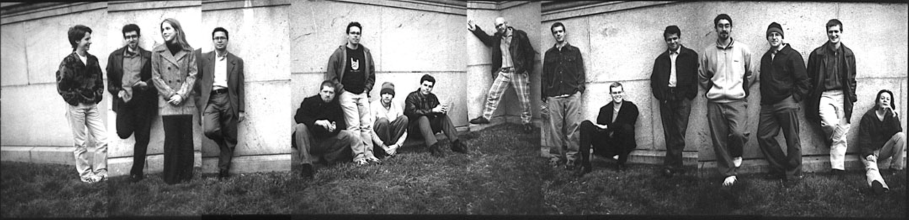
March - A concert of works by György Ligeti, including the Piano Concerto and the New York premiere of the Hamburg Concerto.
September - Alarm Will Sound and Ossia's recording of two landmark Reich works, conducted by Alan Pierson. A document of the ensemble's deep connection to the composer who inspired their formation.
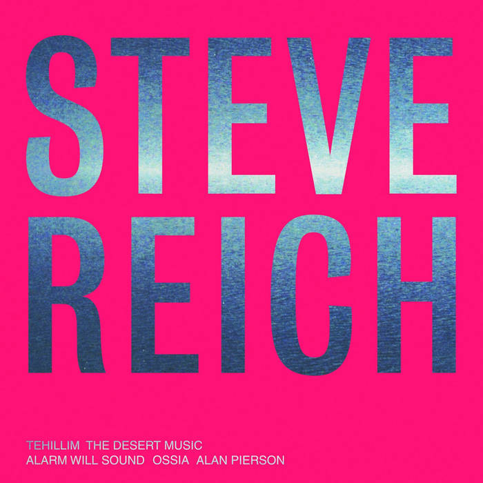
A banner year for the young ensemble: AWS opens its Miller Theatre season with works by Michael Gordon, Conlon Nancarrow, Benedict Mason, John Adams, and György Ligeti. In September, strings and winds join veteran Reich performers at Zankel Hall at Carnegie under David Robertson for Tehillim. December brings a Harrison Birtwistle Portrait concert including the US premiere of Theseus Games, followed by an appearance on John Schaefer's New Sounds Live featuring Aaron Jay Kernis's Toy Piano Concerto with Margaret Leng Tan.
Alarm Will Sound begins a three-year residency at Dickinson College, expanding their educational mission and artistic reach.
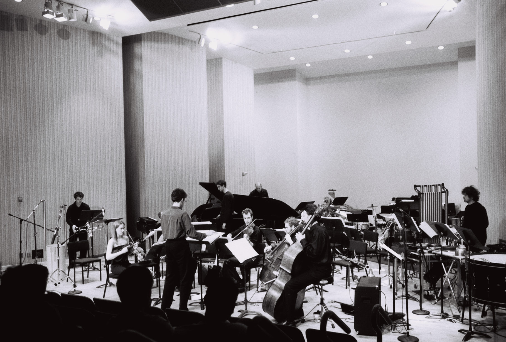
July - Acoustica: Alarm Will Sound Performs Aphex Twin is released, bringing electronic music pioneer Aphex Twin's work to acoustic instruments in a groundbreaking album. Named a New York Times Album of the Year.
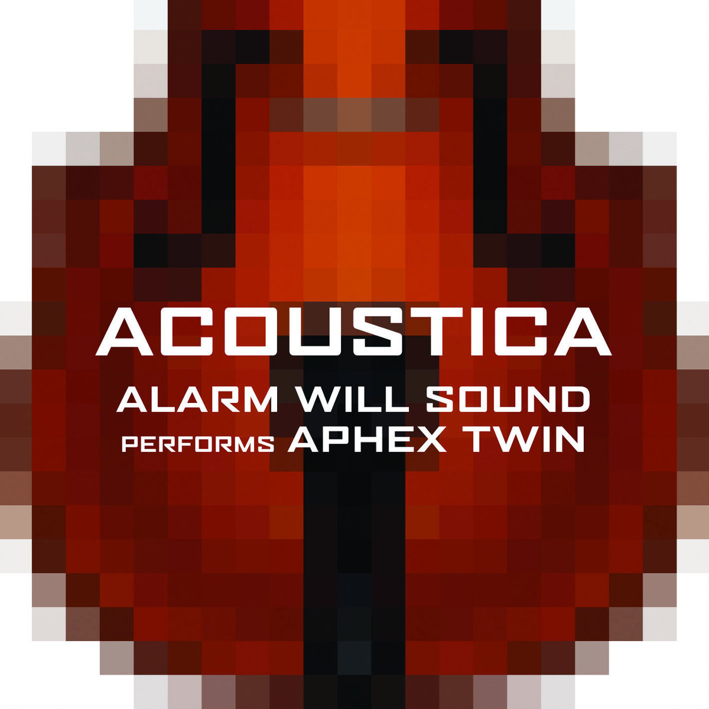
Recognized by ASCAP for "the virtuosity, passion and commitment with which they perform and champion the repertory for the 21st century."
At Zankel Hall, AWS presented "Odd Couples," a program covering vast stylistic ground with elaborately choreographed performances. For Zappa's "Dog Breath Variations/Uncle Meat," musicians milled around onstage like a jam band; for Varèse's "Intégrales," percussionists moved forward and back while winds played en route through the hall, with Alan Pierson conducting from the middle of the audience. The program also featured the premiere of Wolfgang Rihm's "Will Sound" and Caleb Burhans's arrangement of John Adams's "Coast."
CD/DVD release on Sweetspot Music captures the energy and precision of Steve Reich's minimalist masterworks in performance.
Released on Cantaloupe Music, this album showcases Michael Gordon's vivid compositional voice.
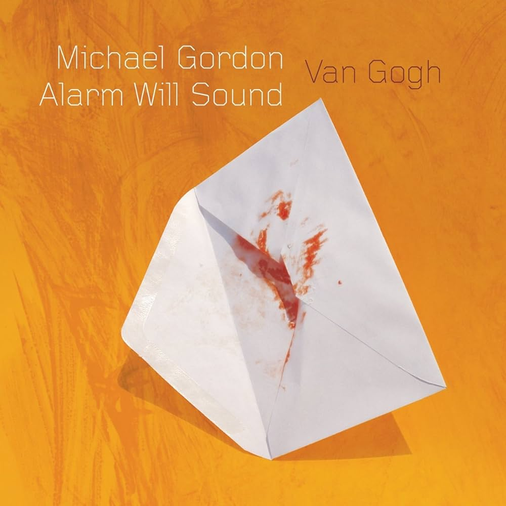
November - Alarm Will Sound performs in Moscow and St. Petersburg, bringing their innovative programming to Russian audiences.
Released on Nonesuch Records, exploring intricate rhythmic territories and contemporary soundscapes.
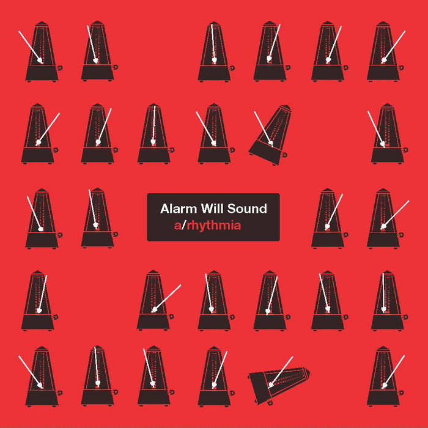
Collaboration with Dirty Projectors debuts at Lincoln Center, Disney Hall, and the Barbican Centre—a groundbreaking fusion of indie rock and contemporary classical.
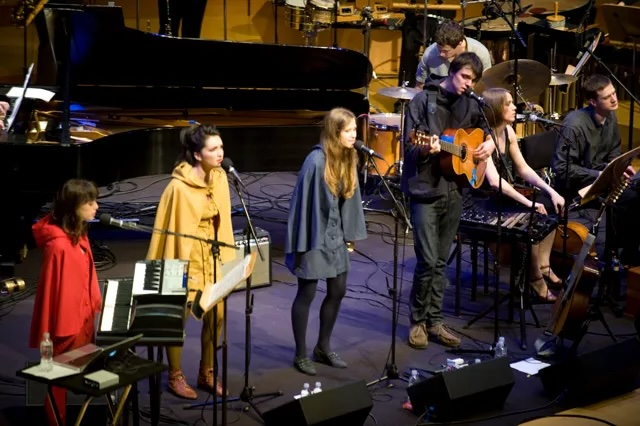
AWS begins its residency at the MICF, a partnership that continues to this day. Over the years, the ensemble has premiered over a hundred works and collaborated with as many composers at the festival.
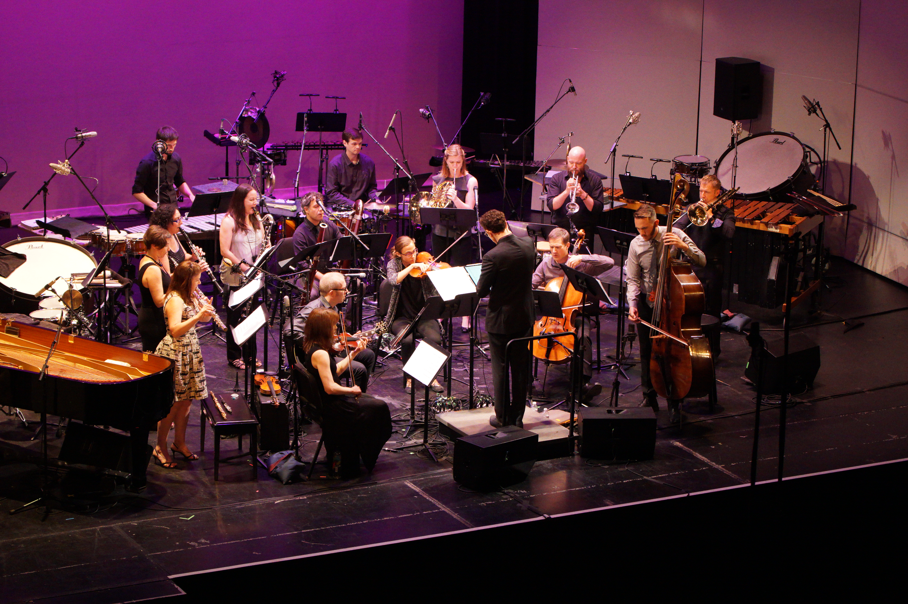
A multimedia event exploring John Lennon, Karlheinz Stockhausen, Luciano Berio, and Leonard Bernstein. The New York Times calls it "a swirling, heady meditation... a consistent wonder."

Alarm Will Sound expands their international reach with performances at the TransArt Festival in Bolzano, Italy and Sacrum Profanum in Kraków, Poland.
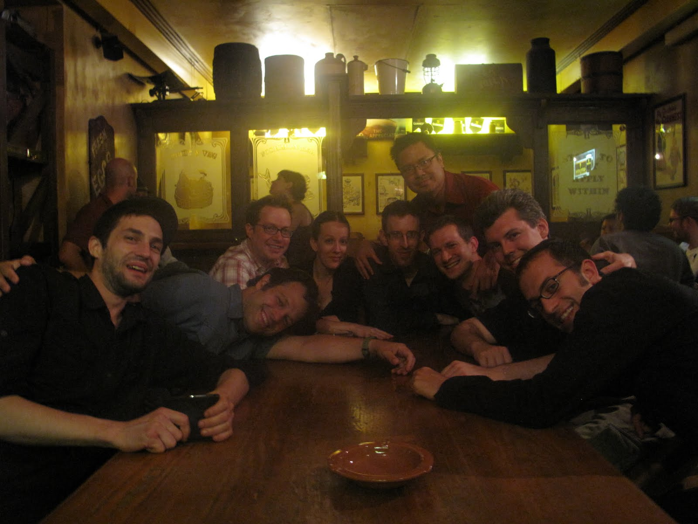
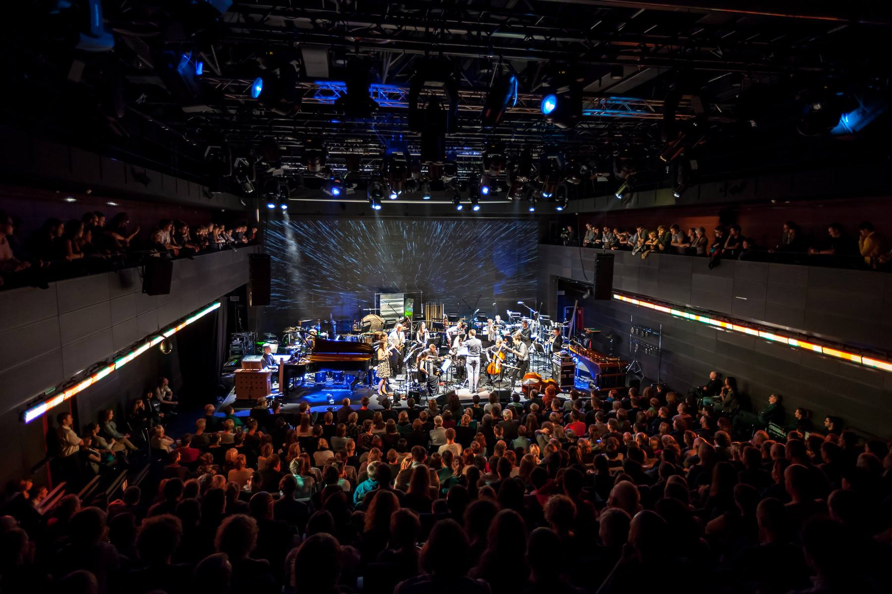
Cantaloupe Music releases this celebration of Derek Bermel's distinctive fusion of classical and vernacular traditions.

AWS launches their St. Louis Season to grow a local audience for contemporary performing arts, presenting at The Sheldon, Touhill, and The Pageant.
AWS becomes artists-in-residence at The Met, presenting "The Permanent Collection," "Twinned," "All Steve Reich," and the opera "I Was Here I Was I" at the Temple of Dendur.

October - Alarm Will Sound gives the US premiere of Steve Reich's Radio Rewrite at Stanford's Bing Concert Hall. The work, inspired by Radiohead songs and written for London Sinfonietta and Alarm Will Sound, marked another milestone in the ensemble's long relationship with the composer.

A new program bringing musical artists from diverse backgrounds together with AWS to create new work, featuring collaborations with Medeski Martin & Wood and others.
Nonesuch Records releases this album featuring Jonny Greenwood performing Electric Counterpoint and Vicky Chow performing Piano Counterpoint.
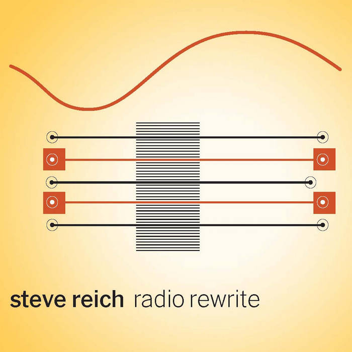
March - AWS performs with Björk at Carnegie Hall to kick off her Vulnicura world tour, bridging contemporary classical and experimental pop.
April - Alarm Will Sound headlines the inaugural Right Now Music festival in Seoul, Korea, performing at the historic Culture Station Seoul 284. The two-day art house music marathon introduced contemporary classical music to Korean audiences.
Released on Cantaloupe Music, a bold exploration of contemporary classical aesthetics.
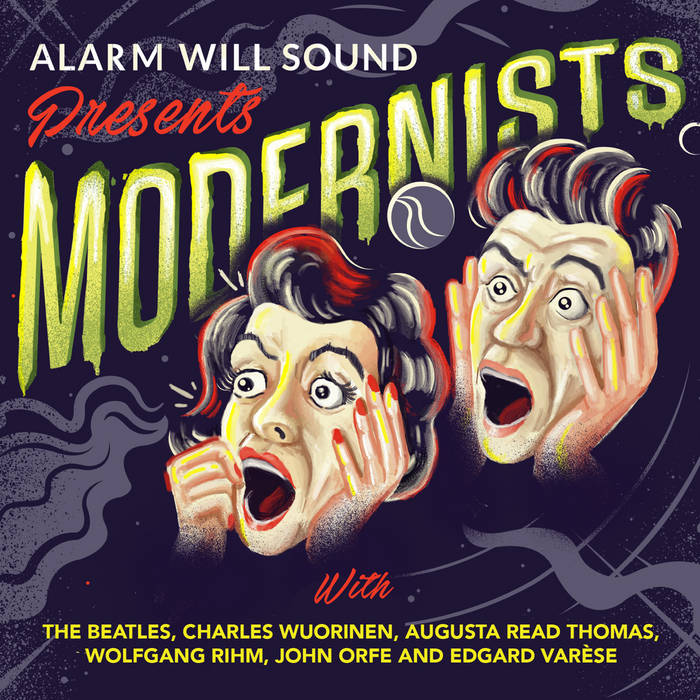
Conceived with Q2 Music's Peabody Award-winning podcast Meet the Composer, this tribute to John Adams features Chamber Symphony and Son of Chamber Symphony with commentary from host Nadia Sirota, Alan Pierson, and the composer himself.
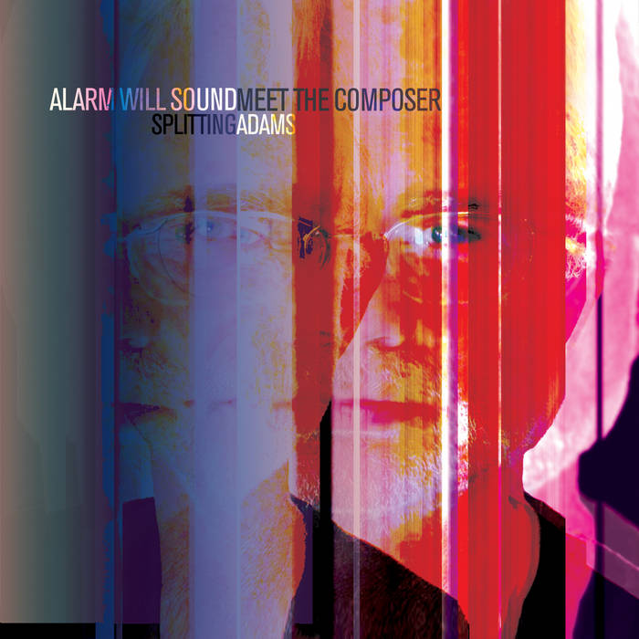
May 11 - The ensemble mourns the loss of member Matt Marks, a talented horn, keyboard, and electronics performer who was integral to the group's sound.


Established to honor Matt's legacy, the fund provides up to $7,500 in seed money for ambitious projects that push Alarm Will Sound and classical music to be more innovative, diverse, and inclusive. Recipients have included Alyssa Pyper, Allison Loggins-Hull & Toshi Reagon, Damon Davis, Caroline Louise Miller, and others.

Collaboration with Medeski Martin & Wood, released on Indirecto Records, bridging contemporary classical and jazz worlds.
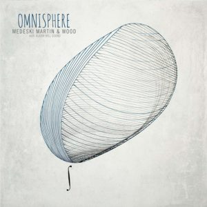
Scott Johnson's "atheist oratorio" featuring philosopher Daniel Dennett's voice examining religion as a natural phenomenon. The Boston Globe called it "a tour de force on the idea of ideas."
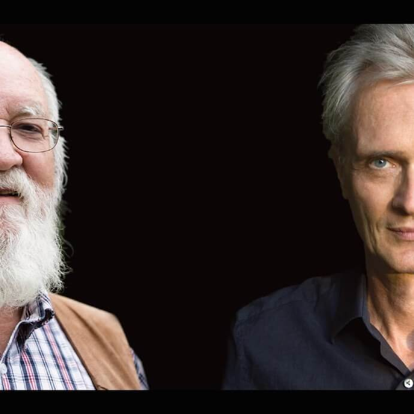
Alarm Will Sound performs in Beijing at the Beijing Modern Festival and in Nanning, bringing their music to Chinese audiences.
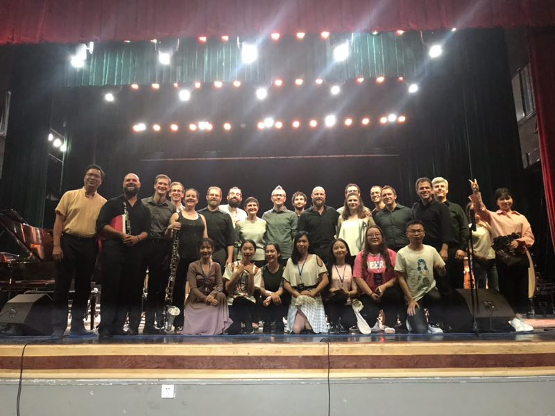
Donnacha Dennehy's powerful work featuring Katherine Manley and Iarla Ó Lionáird, released on Nonesuch Records.

During the pandemic, AWS innovates with remote recording technology, culminating in a series featuring new works by Meredith Monk, Tyshawn Sorey, John Fitz Rogers, Jlin, and Daniel Neumann.

Alan Pierson's innovative reimagining of John Luther Adams's "Ten Thousand Birds," filmed in a single take across 27 screens throughout his apartment. Each musician plays the song of a bird native to New York City, offering an intimate glimpse into the city during a time of crisis.

Featuring composer Tyshawn Sorey, released on Cantaloupe Music. A testament to creative collaboration and improvisation. The albums received widespread acclaim, appearing on NPR's Top Ten Songs of 2021, The New York Times' 25 Best Classical Music Tracks of 2021, and The New Yorker's Notable Recordings of 2021.


April - Alarm Will Sound presents John Luther Adams's immersive Ten Thousand Birds at Park Avenue Armory's vast Wade Thompson Drill Hall. With musicians and audience scattered across the 55,000-square-foot space, the performance created a sonic environment where birdsong surrounded listeners from every direction.

February - AWS premieres Paper Pianos at EMPAC, an evening-length multimedia work exploring the dislocation, longing, and optimism of refugees. Composed by Mary Kouyoumdjian with text and staging by Nigel Maister and animations by Kevork Mourad, the piece takes its name from Afghan pianist Milad Yousufi, who painted piano keys on paper to teach himself in silence under the Taliban's threat.
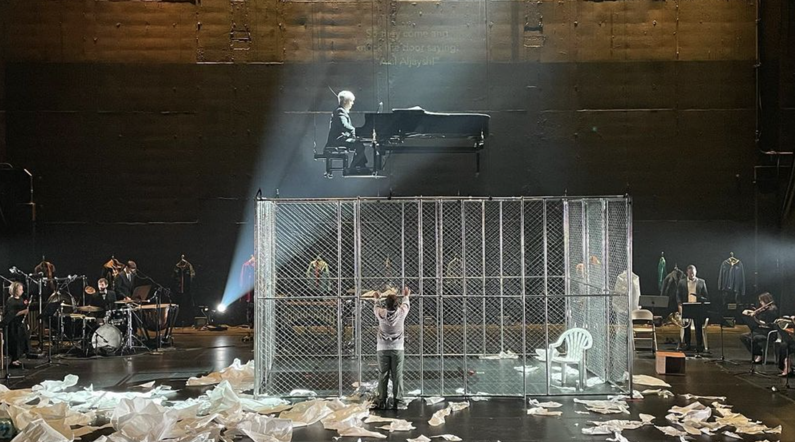
November - Donnacha Dennehy's masterful large-scale work exploring the cyclical interplay of time, light, and nature across twelve movements. Released on Nonesuch Records, it captures the arc of light through the Irish year. Michael Brodeur of the Washington Post calls it "one of my favorite recordings of the year."
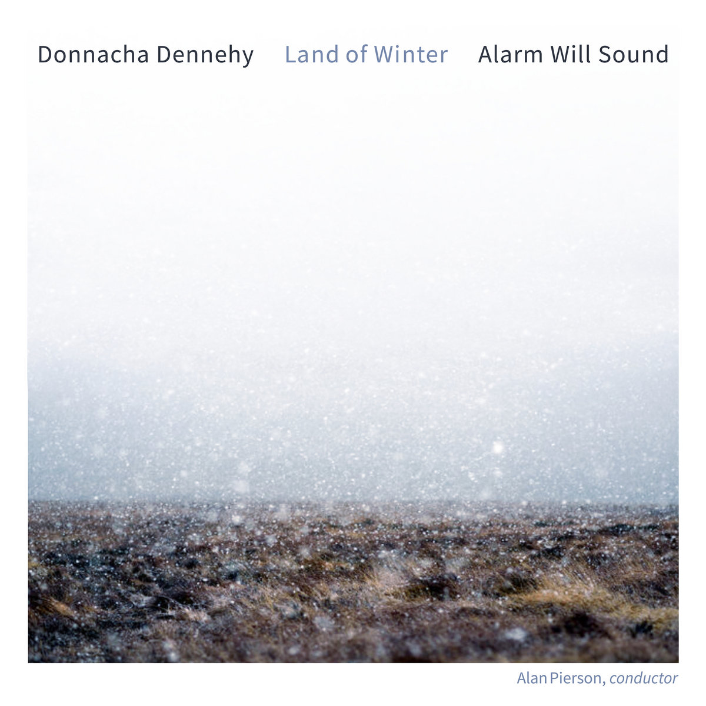
Land of Winter receives two GRAMMY® nominations for the 2026 awards: Best Chamber Music/Small Ensemble Performance and Best Contemporary Classical Composition.
February - Alarm Will Sound wins the GRAMMY® for Best Chamber Music/Small Ensemble Performance for Land of Winter, Donnacha Dennehy's large-scale work exploring the cyclical interplay of time, light, and nature across twelve movements. A crowning achievement celebrating 25 years of musical innovation.
March - For 25 years, Alarm Will Sound's own composers have energized the ensemble's music-making—writing original pieces, arranging music they love, and playing alongside the group's other performers. Each track on Lift tells the story of creating new music together: the virtuosity of Caleb Burhans' intricate rhythms; the drive of cutting-edge electronica and experimental acoustic sound in John Orfe's and Stefan Freund's pieces; Stefan's reworking of Matt Marks' music; Gavin Chuck's arrangement of The Shaggs and Jason Price's arrangement of Boards of Canada; Matt Marks' theatrical setting of Royce Vavrek's libretto; and Daniel Neumann's captured resonance of an empty hall. Making new music together, from blank page to lit stage, our efforts continue to lift each other up, and raise the bar of the musically possible. Listen on Bandcamp
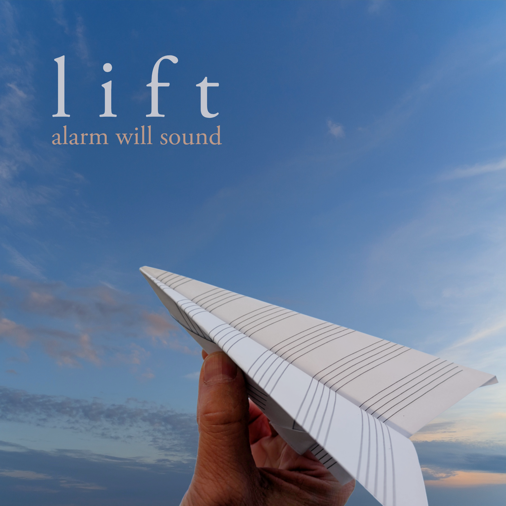
May - Alarm Will Sound celebrates 25 years of musical innovation with two special anniversary concerts: May 5 at The Grandel in St. Louis and May 7 at Roulette in Brooklyn. A celebration and a living portrait of an ensemble still evolving—honoring the past, fully present in the moment, and leaning into the future with curiosity and conviction.
June - The world premiere recording of David T. Little's opera for tenor and chamber ensemble, based on Garth Greenwell's acclaimed novel. Featuring GRAMMY®-winning tenor Karim Sulayman with Alarm Will Sound conducted by Alan Pierson, released on Bright Shiny Things. BBC Music Magazine praised the "carefully judged chamber scoring" and Sulayman's "finely concentrated performance." Listen on Bandcamp
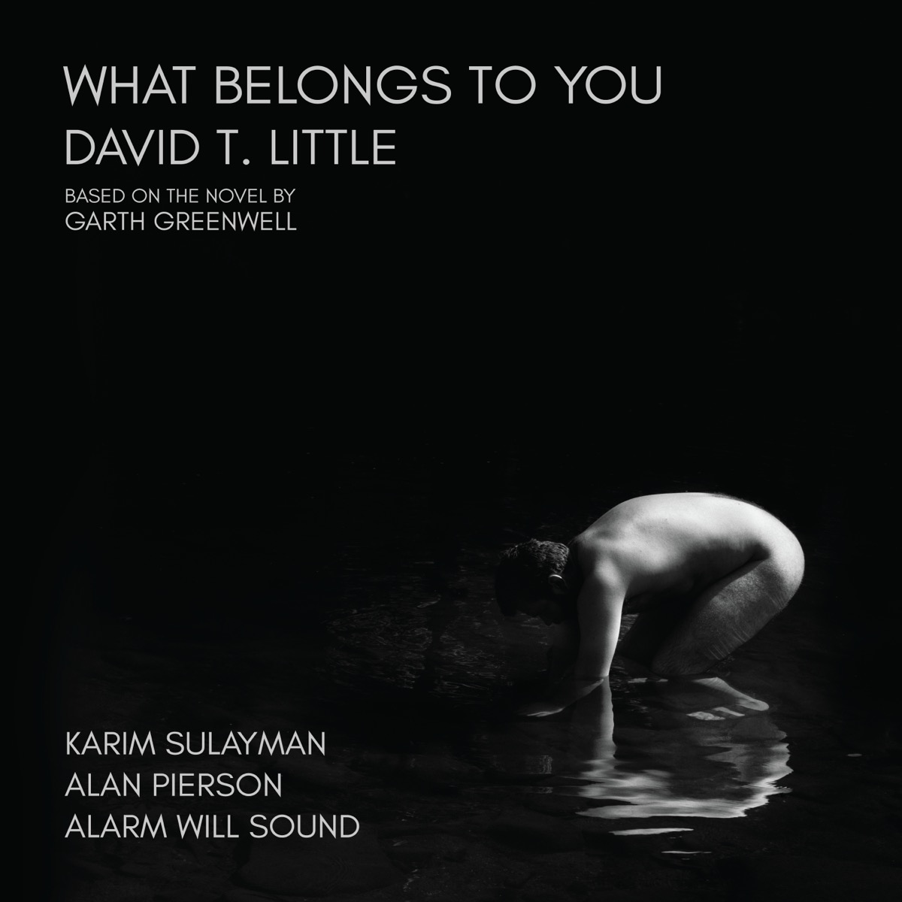
August - The world premiere recording of Mary Kouyoumdjian's Pulitzer Prize finalist work is released on Cantaloupe Music. Weaving the spoken testimony of refugees and resettlement workers through Kouyoumdjian's score, the album carries the stage work's message forward—all artist proceeds support the International Rescue Committee. Learn more
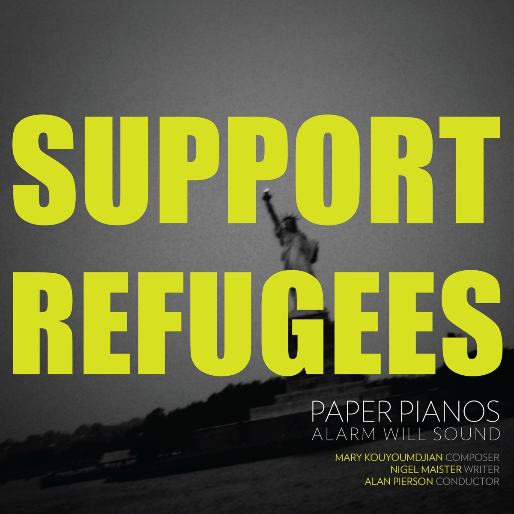